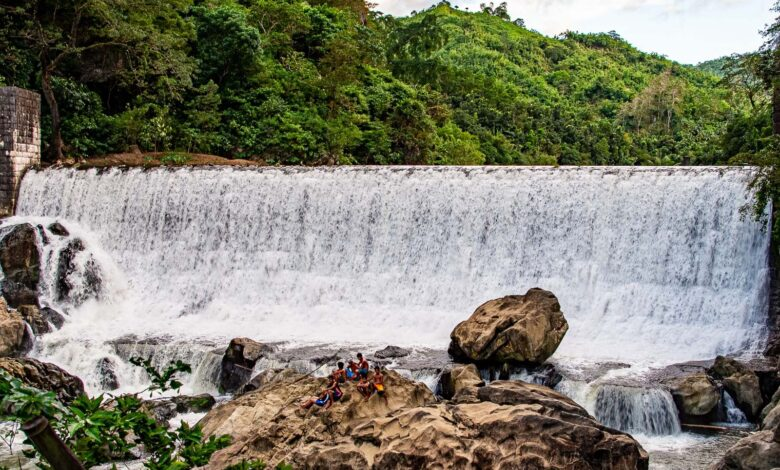
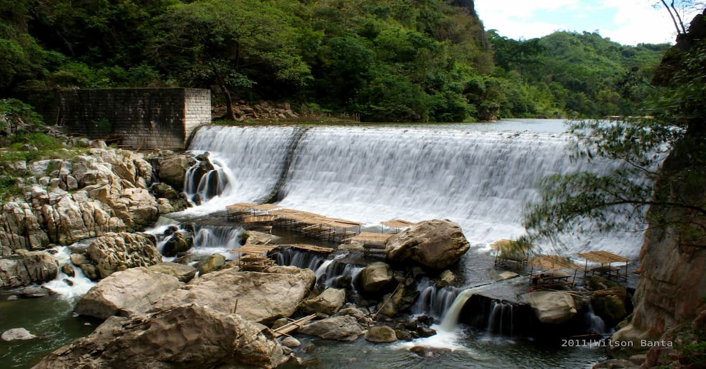
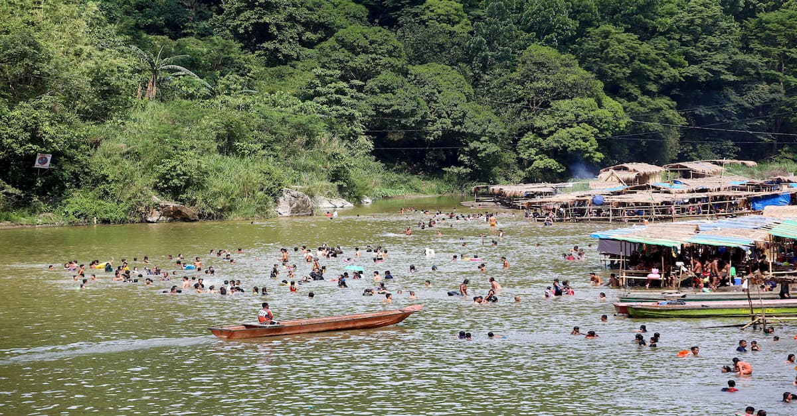
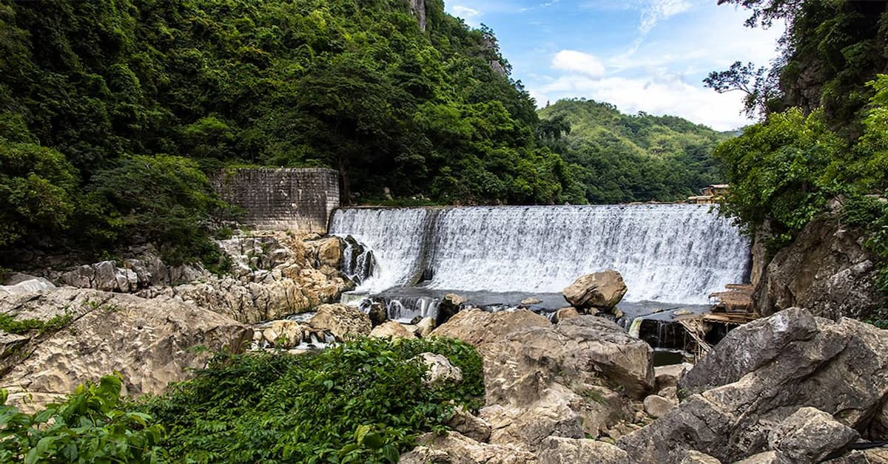

Best for: History Enthusiasts, Bamboo Rafting, and Day-Trippers.
Vibe: Rustic, Historical, and Mythical.

Wawa Dam
Exploring the Historic Gravity Dam and the Legend of Bernardo Carpio.
Wawa Dam is a place of deep historical and cultural significance, nestled between the towering limestone walls of the Rodriguez mountains. Built in 1909, it serves as a beautiful reminder of the region’s past and a gateway to natural adventure.


